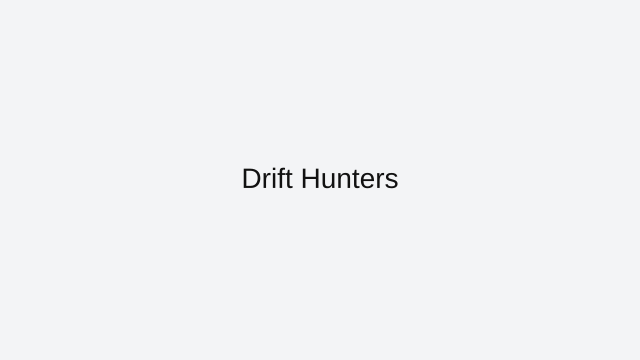

Drift Hunters
Drift Hunters rewards smooth steering and throttle discipline more than aggressive flicking.
How to approach this game
Enter corners with controlled speed, initiate drift early, and modulate throttle to keep angle without spinning. Learn one track deeply before rotating cars.
Common mistakes to avoid
Oversteer loops and wall taps usually come from late entries. Brake earlier and prioritize clean exits for better combo retention.
Who this game is best for
Excellent for players who enjoy tuning, style-focused scoring, and technical car control.
Why it stays in our curated index
Drift Hunters stays in ArcadeZone's reviewed collection because it has a clear skill loop, reliable browser access, and enough real gameplay depth to justify written guidance. We do not keep indexed pages that only repeat generic descriptions or send users to thin external links.
Best session style for this game
The browser versions are most rewarding when you repeat tracks or levels a few times in a row so braking points, landings, and corner timing become automatic.
Related reviewed games: Moto X3M.
ArcadeZone reviews this title for accessibility, control clarity, and replay value before keeping it in the curated index. Our goal is to help players choose the right game quickly, then improve through practical guidance instead of generic filler text.
What you'll love
- Curated review page with practical strategy guidance and clean navigation.
- Direct access to browser gameplay source with no installs required.
- Category fit: Racing gameplay style with related recommendations.
Game essentials
- Category: Racing
- Game type: Drift
- Page status: Indexed (reviewed)
- Play format: opens the original browser source in a new tab

How to play
Use arrow keys or WASD for steering and throttle. Brake earlier than expected and keep exits clean for better lap consistency.
Tips & Tricks
- Enter corners with controlled speed, initiate drift early, and modulate throttle to keep angle without spinning. Learn one track deeply before rotating cars.
- Oversteer loops and wall taps usually come from late entries. Brake earlier and prioritize clean exits for better combo retention.
- Practice in short sessions and track one improvement goal per run to build measurable progress.
Play
Use the verified source link below to launch the game in a new tab.
Open Drift Hunters (external)Related games
Related reviewed games: Moto X3M.
More from ArcadeZone
Developer & Credits
ArcadeZone reviews Drift Hunters for control clarity, replay value, and accessibility before listing it as curated content. We link to the original browser source and provide player-focused guidance on this page.